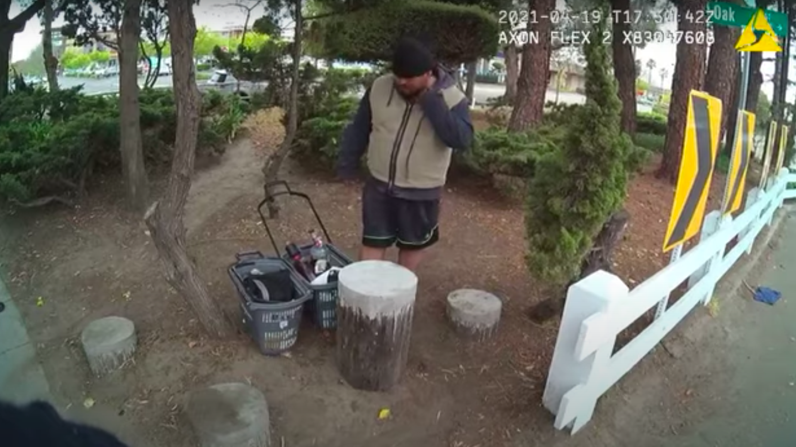
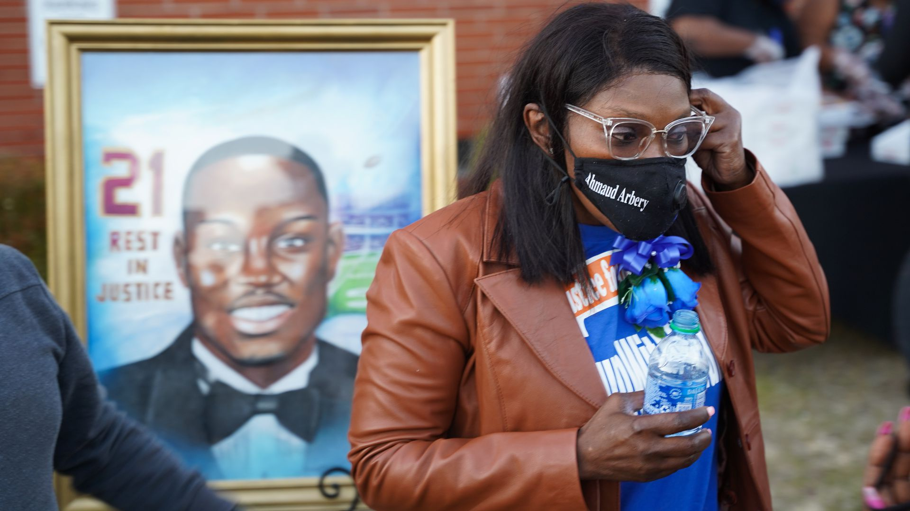
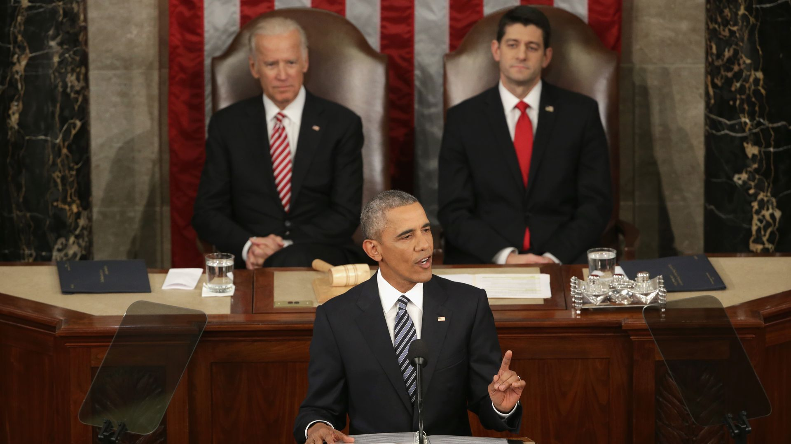

Biden: 'We have all seen the knee of injustice on the neck of Black Americans'
A man in California died in police custody April 19 after Alameda Police Department officers pinned him facedown for nearly five minutes, as shown by body camera footage released Tuesday, the New York Times reports.
The big picture: The death of Mario Arenales Gonzalez, 26, came the day before former Minneapolis police officer Derek Chauvin was convicted of murder and manslaughter charges over George Floyd's death.Chauvin pinned Floyd to the pavement by holding a knee to his neck.
Posted On: 2021-04-28T00:00:00
Posted By: Orion Rummler
Three white men have been charged with federal hate crimes and attempted kidnapping in connection to the death of Ahmaud Arbery, a 25-year-old Black man who was shot and killed last year in Georgia, the Justice Department announced Wednesday.
The big picture: Arbery's death is one of several that drove nationwide Black Lives Matter protests last summer, including demonstrations over the police killings of George Floyd and Breonna Taylor.
Posted On: 2021-04-28T00:00:00
Posted By: Axios
President Biden's address to a joint session of Congress on Wednesday will be noteworthy not because of the COVID-restricted audience but because he'll stand before two women in the House Chamber.
Why it matters: The joint address is not a State of the Union speech, though it will have the usual trappings: an announcement of the president's arrival, and clapping as he walks down the aisle.Almost everything else will be different.
Posted On: 2021-04-28T00:00:00
Posted By: Kadia Goba



Content Date: 2021-04-28
Download Date: 2021-05-15
Document ID: L0C04CCL1